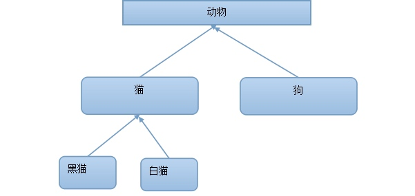
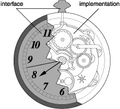

BLOCK是什么？苹果推荐的类型，效率高，在运行中保存代码。用来封装和保存代码，有点像函数，BLOCK可以在任何时候执行。
BOLCK和函数的相似性：（1）可以保存代码（2）有返回值（3）有形参（4）调用方式一样。
Description方法包括类方法和对象方法。（NSObject类所包含）
- description（对象方法）
概念：Category 分类是OC特有的语言，依赖于类。
分类的作用：在不改变原来的类内容的基础上，为类增加一些方法。
完整的创建一个可用的对象：Person *p = [Person new];
Person *p = [Person new];
new方法的内部会分别调用两个方法来完成2件事情。
注意：这两个关键字是编译器特性，让xcode可以自动生成getter和setter的声明和实现。
@property关键字可以自动生成某个成员变量的setter和getter方法的声明 @property int age;
@property
@property int age;
多态在代码中的体现，即为多种形态，必须要有继承，没有继承就没有多态。
在使用多态是，会进行动态检测，以调用真实的对象方法。
多态在代码中的体现即父类指针指向子类对象。
程序的世界和人类的“对象”世界在思想上是没有设么区别的，富二代继承了父母，自然就拥有了父母拥有的所有资源，子类继承了父类同样就拥有了父类所有的方法和属性（成员变量）。

在这里动物是猫类和狗类的父类，黑猫和白猫类是猫类的子类。
面向对象的三大特性：封装（成员变量）、继承和多态
在OC语言中，使用@interface和@implementation来处理类。

@interface就好像暴露在外面的时钟表面，像外界提供展示以及接口。
@interface
@implementation就好像隐藏在时钟内部的构造实现，把具体的实现封装了起来。
@implementation
« Prev Page
» Next Page
CS List 杂
Copyright © 2015 Powered by MWeb, Theme used GitHub CSS.